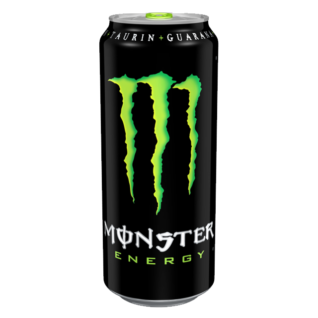
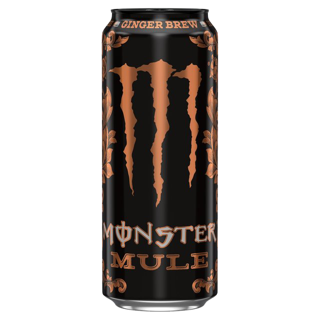

Caffeine: 32mg/100ml
I like drinking Monster. I love the variety of all its tastes. This is where I'll leave brief reviews on their tastes, poisoning my liver and giving myself kindey stones so you don't have to!
|  | It's just an energy drink. The chemical taste of young adulthood. I can't really tell a regular Monster apart from any other non-flavored energy drink. The taste isn't bad in my opinion (I don't share the disgust for that generic energy drink taste/smell like many people do), but I'd rather drink something else. Caffeine: 32mg/100ml |
|
Meh. It's regular Monster sans HFCS. Meaning it's sweeter and less viscous than it's calorie-rich counterpart. It's fine. Caffeine: 32mg/100ml |
 |
Monster Ultra - ultra fucking sweet that is. Drinking this I can't taste anything other than the saccharine sweetness of the citric acid, sucralose, acesulfame potassium and other scary-sounding chemicals. Many people hold it in high regard, but this flavor makes me feel nauseous. I strongly dislike it. Caffeine: 32mg/100ml |
 |
If a nectar of gods existed, this would be it. Tastes like sweet lemon/peach tea mix. This flavor isn't carbonated and holds back on the sweetener, so it's very drinkable and glides down the esophagus nicely. Possibly the greatest flavor of them all by my standards. Caffeine: 28mg/100ml |
 |
Much of what I said about Rehab Lemonade holds here as well. This one has a much stronger peach nectar taste. It's very good. Caffeine: 28mg/100ml |
 |
This is Monster's Coca Cola. Seriously, this tastes halfway between a regular Coca Cola and a Cherry Coca Cola. It's great, though I think it's been discontinued. Caffeine: 32mg/100ml |
 |
If you had given me a glass of this without revealing what it was, I would have thought this was some off-brand Fanta. This doesn't taste like an energy drink at all, which is great for people who dislike drinking them. Caffeine: 30mg/100ml |
|  | This has a strong, sweet ginger taste. Almost like ginger beer. Also has a peppery, slightly spicy aftertaste, which seemed to kick in harder when I was drinking the contents on the bottom of the can. I like it a lot, although the taste may not be for everyone. Also it's sugar free, at least in europe. Caffeine: 30mg/100ml |
 |
A very pleasant, tropical tasting Monster. Mostly tastes of green apple flavoring. Quite drinkable, though it left my mouth very dry afterwards. Caffeine: 32mg/100ml |
 |
A thick raspberry-tasting energy drink. Really manages to picture an image of a music festival for some reason. I'd drink it more often if I could actually find it in stores. Caffeine: 32mg/100ml |
 |
Also a thicker drink, but instead of forest fruit you get a kick in the balls from the peach flavoring. If I cared about my body less I'd probably mix this with vodka. Caffeine: 32mg/100ml |
 |
Surprisingly delicious. This is more of a sports drink rather than a typical Monster drink. It's watery with a light citrusy taste. It doesn't really taste of anything distinct but I guess it's lemon/lime. Caffeine: 25mg/100ml |